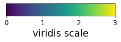
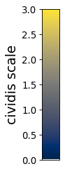
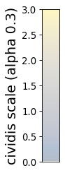

colorschemes¶
Color schemes.
-
dmslogo.colorschemes.AA_CHARGE= {'A': '#000000', 'C': '#000000', 'D': '#0000FF', 'E': '#0000FF', 'F': '#000000', 'G': '#000000', 'H': '#FF0000', 'I': '#000000', 'K': '#FF0000', 'L': '#000000', 'M': '#000000', 'N': '#000000', 'P': '#000000', 'Q': '#000000', 'R': '#FF0000', 'S': '#000000', 'T': '#000000', 'V': '#000000', 'W': '#000000', 'Y': '#000000'}¶ color amino acids by charge
-
dmslogo.colorschemes.AA_FUNCTIONAL_GROUP= {'A': '#f76ab4', 'C': '#ff7f00', 'D': '#e41a1c', 'E': '#e41a1c', 'F': '#84380b', 'G': '#f76ab4', 'H': '#3c58e5', 'I': '#12ab0d', 'K': '#3c58e5', 'L': '#12ab0d', 'M': '#12ab0d', 'N': '#972aa8', 'P': '#12ab0d', 'Q': '#972aa8', 'R': '#3c58e5', 'S': '#ff7f00', 'T': '#ff7f00', 'V': '#12ab0d', 'W': '#84380b', 'Y': '#84380b'}¶ color amino acids by functional group
-
dmslogo.colorschemes.CBBPALETTE= ['#000000', '#E69F00', '#56B4E9', '#009E73', '#F0E442', '#0072B2', '#D55E00', '#CC79A7']¶ color-blind safe palette with black, from http://bconnelly.net/2013/10/creating-colorblind-friendly-figures
-
dmslogo.colorschemes.CBPALETTE= ['#999999', '#E69F00', '#56B4E9', '#009E73', '#F0E442', '#0072B2', '#D55E00', '#CC79A7']¶ color-blind safe palette with gray, from http://bconnelly.net/2013/10/creating-colorblind-friendly-figures
-
class
dmslogo.colorschemes.ValueToColorMap(minvalue, maxvalue, cmap='viridis')[source]¶ Bases:
objectMap numerical values to color gradient.
- Args:
- minvalue (float)
Color map starts at this value.
- maxvalue (float)
Color map ends at this value.
- cmap (str or matplotlib.colors.Colormap)
Name of matplotlib colormap, or an actual Colormap object. You can also use the wider set of color maps from palettable, such as by providing palettable.cmocean.sequential.Dense_20.mpl_colormap.
- Attributes:
- cmap (matplotlib.colors.Colormap)
Color map.
- minvalue (float)
Color map starts at this value.
- maxvalue (float)
Color map ends at this value.
Make a data frame with some values, and two color maps (one with default ‘viridis’ and another with ‘cividis’) covering value range in data frame:
>>> import pandas as pd >>> from dmslogo.colorschemes import ValueToColorMap >>> >>> df = pd.DataFrame({'value': [0, 1, 2, 1, 3, 0]}) >>> map1 = ValueToColorMap(df['value'].min(), ... df['value'].max()) >>> map2 = ValueToColorMap(df['value'].min(), ... df['value'].max(), ... cmap='cividis')
Map values to colors using
ValueToColorMap.val_to_color():>>> df = (df ... .assign(color=lambda x: x['value'].map(map1.val_to_color), ... color2=lambda x: x['value'].map(map2.val_to_color), ... ) ... ) >>> df value color color2 0 0 #440154 #00224d 1 1 #30678d #575d6d 2 2 #35b778 #a59b73 3 1 #30678d #575d6d 4 3 #fde724 #fde737 5 0 #440154 #00224d
Draw scale bars:
>>> fig1, ax1 = map1.scale_bar(orientation='horizontal', ... label='viridis scale')
>>> fig2, ax2 = map2.scale_bar(orientation='vertical', ... label='cividis scale')
>>> fig2, ax2 = map2.scale_bar(orientation='vertical', ... label='cividis scale (alpha 0.3)', ... alpha=0.3)
-
scale_bar(*, orientation='vertical', ax=None, label=None, axisfontscale=1, low_high_ticks_only=False, alpha=1)[source]¶ Draw a scale bar for the value-to-color map.
- Args:
- orientation ({‘horizontal’, ‘vertical’})
Direction that scale bar drawn is drawn.
- ax (None or matplotlib.axes.Axes)
If specified, draw scale bar on this axis. Otherwise create new axes.
- label (None or str)
Label for scale bar.
- axisfontscale (float)
Scale font size by this much.
- low_high_ticks_only (bool)
Rather than showing numerical ticks, indicate low and high.
- alpha (float)
Transparency of scale bar colors.
- Returns:
(matplotlib.figure.Figure, matplotlib.axes.Axes), figure and axis on which the color bar is drawn.
-
val_to_color(values, *, return_color_as='rgb_hex_code')[source]¶ Map numerical values between minvalue and maxvalue to colors.
- Args:
- values (number or array-like of numbers)
Values to map to colors
- return_color_as ({‘rgb_hex_code’, ‘rgb_triple’})
Return color as RGB hex code (e.g., ‘#FF0000’) or triple of numbers (e.g., [255, 0, 0]).
- Returns:
Either str or length-3 arrays depending on return_color_as. If values is single value, return single value; otherwise array.


{kind=link}
{kind=link}
{kind=link}
{kind=link}
{kind=link}
{kind=link}